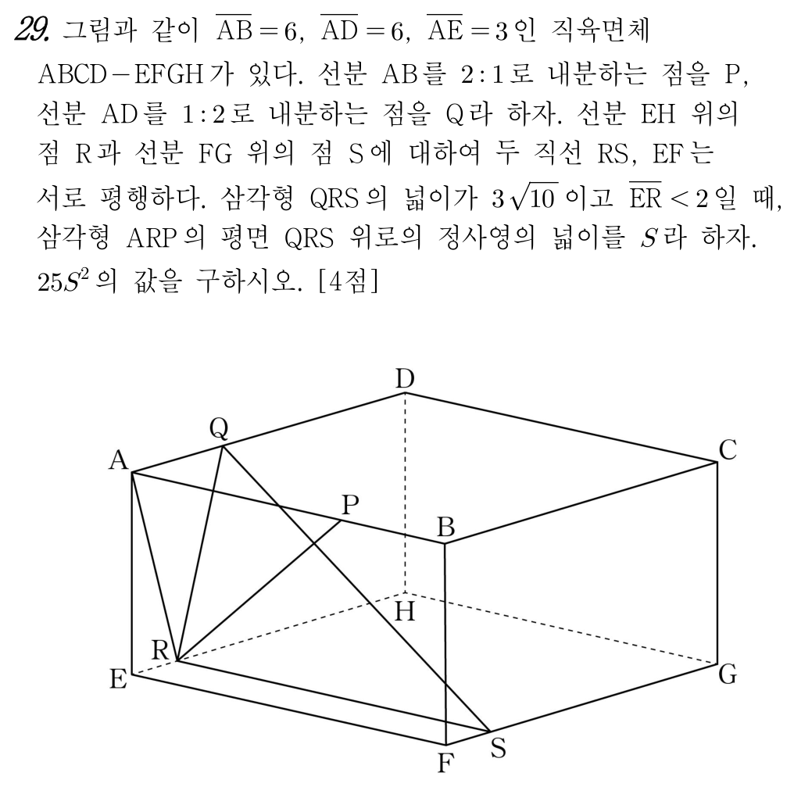

📘 [2026학년도 10월 고3 기하 29번] 직육면체에서 두 평면이 이루는 각과 정사영의 넓이📘 [2026 AY Oct Exam Grade 12 Geometry #29] Dihedral Angle and Orthogonal Projection Area in a Rectangular Box
초등학생도 1단계부터 차근차근 따라가면 수능·학력평가 본문항까지 스스로 풀 수 있는 단계별 디딤돌 퀴즈입니다.Elementary-to-advanced step-by-step scaffolding quiz. Instant scoring & explanations upon selection.

📋 원본 문항 핵심 요약 및 목표📋 Official Problem Summary & Objectives
직육면체에서 두 평면이 이루는 각과 정사영의 넓이
직육면체 $\mathrm{ABCD-EFGH}$에서 내분점 길이 $\overline{\mathrm{AP}}=4, \overline{\mathrm{AQ}}=2$와 $\text{Area}(\triangle\mathrm{QRS})=3\sqrt{10}$으로부터 $\overline{\mathrm{ER}}=1$을 구하고, 옆면 단면 벡터로 이면각 $\cos\theta=\dfrac{4}{5}$를 구해 $S=\dfrac{8\sqrt{10}}{5},\ 25S^2=640$ 도출하기
수학자료실의 PDF 자료는 곡선 아래의 불규칙한 넓이가 직사각형들의 무한 분할로 채워지는 과정을 단계별로 보여줍니다.
• [균등 분할] 구간 $[a, b]$를 $n$개의 미세 구간으로 나누고, 각 구간에서 세운 직사각형의 넓이 합(구분구적법)을 구성합니다.
• [오차의 소멸] $n=2, 4, 8, 16, \dots$으로 분할 수를 늘릴 때마다 곡선과 직사각형 사이의 삐져나온 톱니형 오차가 눈앞에서 사라지는 시각적 장관 관찰
• [미적분학의 기본정리] 무한히 쪼갠 직사각형의 극한합이 부정적분의 함숫값 차이 $F(b)-F(a)$와 정확히 일치하는 기적적인 연결을 하단 자료의 프레임 넘김으로 확인해 보세요.
The archive's flipbook proof materials demonstrate how fundamental mathematical principles converge smoothly frame by frame. Explore the interactive dynamic geometry applets below.
🔰 제0단계 · 수학 기호 번역기🔰 Step 0 · Mathematical Symbol Translator
🔰 1단계 · [초등 비례배분] $\overline{\mathrm{AB}} = 6, \overline{\mathrm{AD}} = 6$에서 $\overline{\mathrm{AP}}$와 $\overline{\mathrm{AQ}}$의 길이 구하기🔰 Step 1 · [Elementary Proportional Division] Finding $\overline{\mathrm{AP}}$ and $\overline{\mathrm{AQ}}$ from $\overline{\mathrm{AB}} = \overline{\mathrm{AD}} = 6$
먼저 알아야 할 지식
직육면체에서 $\overline{\mathrm{AB}} = 6$을 $2 : 1$로 내분하는 점이 $\mathrm{P}$이고, $\overline{\mathrm{AD}} = 6$을 $1 : 2$로 내분하는 점이 $\mathrm{Q}$입니다. 초등학교 비례배분처럼 전체 $2 + 1 = 3$칸으로 나누어 한 칸의 길이($6 \div 3 = 2$)를 구해 봅시다!🌿 2단계 · [초등 삼각형의 넓이] $\triangle\mathrm{QRS}$의 넓이 $3\sqrt{10}$에서 선분 $\mathrm{QR}$의 길이 구하기🌿 Step 2 · [Triangle Area] Finding $\overline{\mathrm{QR}}$ from $\text{Area}(\triangle\mathrm{QRS}) = 3\sqrt{10}$
먼저 알아야 할 지식
선분 $\mathrm{RS}$는 모서리 $\mathrm{EF}$와 평행하므로 길이가 $\overline{\mathrm{RS}} = \overline{\mathrm{EF}} = \overline{\mathrm{AB}} = 6$이고, 옆면 $\mathrm{AEHD}$ 전체와 수직입니다! 따라서 옆면 $\mathrm{AEHD}$ 위에 있는 선분 $\mathrm{QR}$과 선분 $\mathrm{RS}$는 서로 수직($\mathrm{QR} \perp \mathrm{RS}$)이어서 $\triangle\mathrm{QRS}$는 직각삼각형입니다.🌱 3단계 · [옆면 피타고라스 정리] $\overline{\mathrm{QR}} = \sqrt{10}$과 $\overline{\mathrm{ER}} < 2$로 $\overline{\mathrm{ER}}$의 길이 확정하기🌱 Step 3 · [Side Face Pythagoras] Finding $\overline{\mathrm{ER}}$ from $\overline{\mathrm{QR}} = \sqrt{10}$ and $\overline{\mathrm{ER}} < 2$
먼저 알아야 할 지식
직사각형 모양인 옆면 $\mathrm{AEHD}$에서 높이는 $\overline{\mathrm{AE}} = 3$이고, 위쪽 변에서 $\overline{\mathrm{AQ}} = 2$, 아래쪽 변에서 $\overline{\mathrm{ER}} = r$이라 하면 가로 차이는 $|2 - r|$입니다. 피타고라스 정리에 의해 $\overline{\mathrm{QR}}^2 = (2 - r)^2 + 3^2 = 10$입니다!🌳 4단계 · [삼각형 $\mathrm{ARP}$의 넓이] 직각삼각형 $\mathrm{ARP}$의 두 직각변과 넓이 구하기🌳 Step 4 · [Area of $\triangle\mathrm{ARP}$] Finding the legs and area of right triangle $\triangle\mathrm{ARP}$
먼저 알아야 할 지식
직각삼각형 $\mathrm{AER}$에서 $\overline{\mathrm{AE}} = 3, \overline{\mathrm{ER}} = 1$이므로 빗변 $\overline{\mathrm{AR}} = \sqrt{3^2 + 1^2} = \sqrt{10}$입니다. 또한 모서리 $\mathrm{AB}$ 위의 선분 $\mathrm{AP}$($\overline{\mathrm{AP}} = 4$)는 옆면 $\mathrm{AEHD}$에 수직이므로 $\mathrm{AP} \perp \mathrm{AR}$입니다! 즉 $\triangle\mathrm{ARP}$는 $\angle\mathrm{PAR} = 90^\circ$인 직각삼각형입니다.🏛️ 5단계 · [두 평면의 이면각 구조] 옆면 $\mathrm{AEHD}$에서 이면각 $\theta = \angle\mathrm{ARQ}$ 찾기🏛️ Step 5 · [Dihedral Angle Structure] Identifying $\theta = \angle\mathrm{ARQ}$ in side face $\mathrm{AEHD}$
먼저 알아야 할 지식
평면 $\mathrm{ARP}$에 포함된 직선 $\mathrm{AP}$와 평면 $\mathrm{QRS}$에 포함된 직선 $\mathrm{RS}$는 모두 모서리 $\mathrm{EF}$에 평행하므로 옆면 $\mathrm{AEHD}$에 수직입니다. 따라서 두 평면이 이루는 이면각 $\theta$는 두 평면이 옆면 $\mathrm{AEHD}$와 만나서 이루는 두 선분 $\mathrm{RA}$와 $\mathrm{RQ}$ 사이의 각 $\angle\mathrm{ARQ}$와 정확히 같습니다!⚡ 6단계 · [이면각의 코사인] 내적으로 $\cos\theta$ 계산하기⚡ Step 6 · [Cosine of Dihedral Angle] Computing $\cos\theta$ via dot product
먼저 알아야 할 지식
두 벡터 $\overrightarrow{\mathrm{RA}} = (-1, 3)$과 $\overrightarrow{\mathrm{RQ}} = (1, 3)$의 크기는 모두 $\sqrt{1 + 9} = \sqrt{10}$이고, 내적은 $(-1)\times 1 + 3\times 3 = -1 + 9 = 8$입니다. (또는 삼각형 $\mathrm{ARQ}$에서 코사인법칙을 써도 똑같습니다!)🌟 7단계 · [정사영의 넓이 $S$] $S = \text{Area}(\triangle\mathrm{ARP}) \times \cos\theta$ 구하기🌟 Step 7 · [Projected Area $S$] Computing $S = \text{Area}(\triangle\mathrm{ARP}) \times \cos\theta$
먼저 알아야 할 지식
정사영의 넓이 공식에 따라 4단계에서 구한 $\text{Area}(\triangle\mathrm{ARP}) = 2\sqrt{10}$에 6단계에서 구한 $\cos\theta = \dfrac{4}{5}$를 곱하면 $S$를 얻습니다.💎 8단계 · [최종 종합] $25S^2$의 값 계산하기💎 Step 8 · [Final Synthesis] Computing $25S^2$
먼저 알아야 할 지식
$S = \dfrac{8\sqrt{10}}{5}$를 제곱하면 $S^2 = \dfrac{64 \times 10}{25} = \dfrac{640}{25}$이므로, 여기에 $25$를 곱하면 분모가 깔끔하게 약분됩니다!📘 mathedu
📝 먼저 이름을 입력하세요
이름을 입력해야 학습 기록이 저장됩니다.Your learning progress will be saved under this name.
🎯 최종 문제 + 상세 풀이🎯 Final Official Exam Problem & Complete Solution
📋 [문제 분석 및 핵심 출제 의도]
본 문항은 직육면체에서 직선과 평면의 수직 관계 및 두 평면이 이루는 이면각을 통한 정사영의 넓이를 구하는 공간도형 4점 문항입니다.
📐 [단계별 상세 풀이 전개]
1단계: 삼각형 $\mathrm{QRS}$의 넓이로 $\overline{\mathrm{ER}} = 1$ 결정
내분비로부터 $\overline{\mathrm{AP}} = 4, \overline{\mathrm{AQ}} = 2$입니다. $\mathrm{RS} \parallel \mathrm{EF}$이고 $\mathrm{EF} \perp (\text{평면 }\mathrm{AEHD})$이므로 $\mathrm{RS} \perp \mathrm{QR}$입니다.
$\overline{\mathrm{ER}} = r$ ($r < 2$)이라 하면 $\overline{\mathrm{QR}} = \sqrt{(2-r)^2 + 3^2}$이므로:
$$\text{Area}(\triangle\mathrm{QRS}) = \frac{1}{2} \times 6 \times \sqrt{(2-r)^2 + 9} = 3\sqrt{10} \implies (2-r)^2 = 1 \implies r = 1$$
2단계: 두 평면 $\mathrm{ARP}$와 $\mathrm{QRS}$가 이루는 각 $\theta$ 구하기
두 평면 모두 모서리 $\mathrm{EF}$에 평행하므로 옆면 $\mathrm{AEHD}$에 수직입니다. 따라서 이면각 $\theta$는 옆면 $\mathrm{AEHD}$ 위의 두 벡터 $\overrightarrow{\mathrm{RA}} = (-1, 3)$과 $\overrightarrow{\mathrm{RQ}} = (1, 3)$이 이루는 각 $\angle\mathrm{ARQ}$와 같습니다:
$$\cos\theta = \frac{(-1)(1) + 3(3)}{\sqrt{10}\sqrt{10}} = \frac{8}{10} = \frac{4}{5}$$
3단계: 정사영의 넓이 $S$와 $25S^2$ 계산
$\mathrm{AP} \perp \mathrm{AR}$이고 $\overline{\mathrm{AP}} = 4, \overline{\mathrm{AR}} = \sqrt{10}$이므로 $\text{Area}(\triangle\mathrm{ARP}) = \dfrac{1}{2} \times 4 \times \sqrt{10} = 2\sqrt{10}$입니다.
$$S = \text{Area}(\triangle\mathrm{ARP})\cos\theta = 2\sqrt{10} \times \frac{4}{5} = \frac{8\sqrt{10}}{5} \implies 25S^2 = 640$$
🪜 [초등 눈높이 디딤돌 전 단계(1단계~8단계) 완전 연결 상세 해설]
위 디딤돌 문제에서 밟아 온 $1$단계부터 $8$단계까지의 작은 조각들을 순서대로 연결하면 본문항의 풀이가 빈틈없이 완성됩니다.
- 🔰 1단계 · [초등 비례배분] $\overline{\mathrm{AB}} = 6, \overline{\mathrm{AD}} = 6$에서 $\overline{\mathrm{AP}}$와 $\overline{\mathrm{AQ}}$의 길이 구하기
• 핵심 개념 및 원리: 직육면체에서 $\overline{\mathrm{AB}} = 6$을 $2 : 1$로 내분하는 점이 $\mathrm{P}$이고, $\overline{\mathrm{AD}} = 6$을 $1 : 2$로 내분하는 점이 $\mathrm{Q}$입니다. 초등학교 비례배분처럼 전체 $2 + 1 = 3$칸으로 나누어 한 칸의 길이($6 \div 3 = 2$)를 구해 봅시다!
• 단계 확인 정답 ($\overline{\mathrm{AP}} = 4,\ \overline{\mathrm{AQ}} = 2$): $\overline{\mathrm{AP}} = 6 \times \dfrac{2}{3} = 4$이고, $\overline{\mathrm{AQ}} = 6 \times \dfrac{1}{3} = 2$입니다. - 🌿 2단계 · [초등 삼각형의 넓이] $\triangle\mathrm{QRS}$의 넓이 $3\sqrt{10}$에서 선분 $\mathrm{QR}$의 길이 구하기
• 핵심 개념 및 원리: 선분 $\mathrm{RS}$는 모서리 $\mathrm{EF}$와 평행하므로 길이가 $\overline{\mathrm{RS}} = \overline{\mathrm{EF}} = \overline{\mathrm{AB}} = 6$이고, 옆면 $\mathrm{AEHD}$ 전체와 수직입니다! 따라서 옆면 $\mathrm{AEHD}$ 위에 있는 선분 $\mathrm{QR}$과 선분 $\mathrm{RS}$는 서로 수직($\mathrm{QR} \perp \mathrm{RS}$)이어서 $\triangle\mathrm{QRS}$는 직각삼각형입니다.
• 단계 확인 정답 ($\sqrt{10}$): $3\overline{\mathrm{QR}} = 3\sqrt{10}$이므로 $\overline{\mathrm{QR}} = \sqrt{10}$입니다. - 🌱 3단계 · [옆면 피타고라스 정리] $\overline{\mathrm{QR}} = \sqrt{10}$과 $\overline{\mathrm{ER}} < 2$로 $\overline{\mathrm{ER}}$의 길이 확정하기
• 핵심 개념 및 원리: 직사각형 모양인 옆면 $\mathrm{AEHD}$에서 높이는 $\overline{\mathrm{AE}} = 3$이고, 위쪽 변에서 $\overline{\mathrm{AQ}} = 2$, 아래쪽 변에서 $\overline{\mathrm{ER}} = r$이라 하면 가로 차이는 $|2 - r|$입니다. 피타고라스 정리에 의해 $\overline{\mathrm{QR}}^2 = (2 - r)^2 + 3^2 = 10$입니다!
• 단계 확인 정답 ($1$): $(2 - r)^2 = 1 \implies 2 - r = \pm 1$인데 $r < 2$이므로 $r = 1$입니다. - 🌳 4단계 · [삼각형 $\mathrm{ARP}$의 넓이] 직각삼각형 $\mathrm{ARP}$의 두 직각변과 넓이 구하기
• 핵심 개념 및 원리: 직각삼각형 $\mathrm{AER}$에서 $\overline{\mathrm{AE}} = 3, \overline{\mathrm{ER}} = 1$이므로 빗변 $\overline{\mathrm{AR}} = \sqrt{3^2 + 1^2} = \sqrt{10}$입니다. 또한 모서리 $\mathrm{AB}$ 위의 선분 $\mathrm{AP}$($\overline{\mathrm{AP}} = 4$)는 옆면 $\mathrm{AEHD}$에 수직이므로 $\mathrm{AP} \perp \mathrm{AR}$입니다! 즉 $\triangle\mathrm{ARP}$는 $\angle\mathrm{PAR} = 90^\circ$인 직각삼각형입니다.
• 단계 확인 정답 ($2\sqrt{10}$): $\dfrac{1}{2} \times 4 \times \sqrt{10} = 2\sqrt{10}$입니다. - 🏛️ 5단계 · [두 평면의 이면각 구조] 옆면 $\mathrm{AEHD}$에서 이면각 $\theta = \angle\mathrm{ARQ}$ 찾기
• 핵심 개념 및 원리: 평면 $\mathrm{ARP}$에 포함된 직선 $\mathrm{AP}$와 평면 $\mathrm{QRS}$에 포함된 직선 $\mathrm{RS}$는 모두 모서리 $\mathrm{EF}$에 평행하므로 옆면 $\mathrm{AEHD}$에 수직입니다. 따라서 두 평면이 이루는 이면각 $\theta$는 두 평면이 옆면 $\mathrm{AEHD}$와 만나서 이루는 두 선분 $\mathrm{RA}$와 $\mathrm{RQ}$ 사이의 각 $\angle\mathrm{ARQ}$와 정확히 같습니다!
• 단계 확인 정답 ($\overrightarrow{\mathrm{RA}} = (-1, 3),\ \overrightarrow{\mathrm{RQ}} = (1, 3)$): $\overrightarrow{\mathrm{RA}} = (0 - 1, 3 - 0) = (-1, 3)$이고 $\overrightarrow{\mathrm{RQ}} = (2 - 1, 3 - 0) = (1, 3)$입니다. - ⚡ 6단계 · [이면각의 코사인] 내적으로 $\cos\theta$ 계산하기
• 핵심 개념 및 원리: 두 벡터 $\overrightarrow{\mathrm{RA}} = (-1, 3)$과 $\overrightarrow{\mathrm{RQ}} = (1, 3)$의 크기는 모두 $\sqrt{1 + 9} = \sqrt{10}$이고, 내적은 $(-1)\times 1 + 3\times 3 = -1 + 9 = 8$입니다. (또는 삼각형 $\mathrm{ARQ}$에서 코사인법칙을 써도 똑같습니다!)
• 단계 확인 정답 ($\dfrac{4}{5}$): $\dfrac{8}{10} = \dfrac{4}{5}$입니다. - 🌟 7단계 · [정사영의 넓이 $S$] $S = \text{Area}(\triangle\mathrm{ARP}) \times \cos\theta$ 구하기
• 핵심 개념 및 원리: 정사영의 넓이 공식에 따라 4단계에서 구한 $\text{Area}(\triangle\mathrm{ARP}) = 2\sqrt{10}$에 6단계에서 구한 $\cos\theta = \dfrac{4}{5}$를 곱하면 $S$를 얻습니다.
• 단계 확인 정답 ($\dfrac{8\sqrt{10}}{5}$): $S = \dfrac{8\sqrt{10}}{5}$입니다. - 💎 8단계 · [최종 종합] $25S^2$의 값 계산하기
• 핵심 개념 및 원리: $S = \dfrac{8\sqrt{10}}{5}$를 제곱하면 $S^2 = \dfrac{64 \times 10}{25} = \dfrac{640}{25}$이므로, 여기에 $25$를 곱하면 분모가 깔끔하게 약분됩니다!
• 단계 확인 정답 ($640$): $25 \times \dfrac{64 \times 10}{25} = 640$입니다.
✨ [정답 도출 및 실전 점검 포인트]
따라서 구하는 값은 $640$입니다.
📋 [Problem Analysis & Core Concepts]
This problem computes the orthogonal projection area between two planes $\mathrm{ARP}$ and $\mathrm{QRS}$ that are both perpendicular to face $\mathrm{AEHD}$ of the rectangular box.
📐 [Step-by-Step Rigorous Derivation]
Step 1: Determine $\overline{\mathrm{ER}} = 1$
$$\text{Area}(\triangle\mathrm{QRS}) = \frac{1}{2}(6)\sqrt{(2-r)^2 + 9} = 3\sqrt{10} \implies r = \overline{\mathrm{ER}} = 1$$
Step 2: Dihedral angle and projected area
In face $\mathrm{AEHD}$, $\overrightarrow{\mathrm{RA}} = (-1, 3)$ and $\overrightarrow{\mathrm{RQ}} = (1, 3)$ give $\cos\theta = \frac{8}{10} = \frac{4}{5}$.
Since $\text{Area}(\triangle\mathrm{ARP}) = \frac{1}{2}(4)\sqrt{10} = 2\sqrt{10}$, we obtain $S = \frac{8\sqrt{10}}{5}$ and $25S^2 = 640$.
🪜 [Complete Step-by-Step Scaffolding Walkthrough (Steps 1–8)]
Connecting each elementary-grounded scaffolding step from Step 1 to Step 8 completes the entire derivation without any logical gaps:
- 🔰 Step 1 · [Elementary Proportional Division] Finding $\overline{\mathrm{AP}}$ and $\overline{\mathrm{AQ}}$ from $\overline{\mathrm{AB}} = \overline{\mathrm{AD}} = 6$
• Core Principle: Point $\mathrm{P}$ divides $\overline{\mathrm{AB}} = 6$ in the ratio $2:1$, and $\mathrm{Q}$ divides $\overline{\mathrm{AD}} = 6$ in the ratio $1:2$.
• Step Verification ($\overline{\mathrm{AP}} = 4,\ \overline{\mathrm{AQ}} = 2$): $\overline{\mathrm{AP}} = 4$ and $\overline{\mathrm{AQ}} = 2$. - 🌿 Step 2 · [Triangle Area] Finding $\overline{\mathrm{QR}}$ from $\text{Area}(\triangle\mathrm{QRS}) = 3\sqrt{10}$
• Core Principle: Since $\mathrm{RS} \parallel \mathrm{EF}$ and $\mathrm{EF} \perp (\text{face }\mathrm{AEHD})$, we have $\overline{\mathrm{RS}} = 6$ and $\mathrm{QR} \perp \mathrm{RS}$.
• Step Verification ($\sqrt{10}$): $\overline{\mathrm{QR}} = \sqrt{10}$. - 🌱 Step 3 · [Side Face Pythagoras] Finding $\overline{\mathrm{ER}}$ from $\overline{\mathrm{QR}} = \sqrt{10}$ and $\overline{\mathrm{ER}} < 2$
• Core Principle: In rectangle $\mathrm{AEHD}$ with height $\overline{\mathrm{AE}} = 3$, let $\overline{\mathrm{ER}} = r$. Then $\overline{\mathrm{QR}}^2 = (2 - r)^2 + 3^2 = 10$.
• Step Verification ($1$): $r = 1$. - 🌳 Step 4 · [Area of $\triangle\mathrm{ARP}$] Finding the legs and area of right triangle $\triangle\mathrm{ARP}$
• Core Principle: In $\triangle\mathrm{AER}$, $\overline{\mathrm{AR}} = \sqrt{3^2+1^2} = \sqrt{10}$. Since $\mathrm{AP} \perp (\text{face }\mathrm{AEHD})$, $\mathrm{AP} \perp \mathrm{AR}$ with $\overline{\mathrm{AP}} = 4$.
• Step Verification ($2\sqrt{10}$): $2\sqrt{10}$. - 🏛️ Step 5 · [Dihedral Angle Structure] Identifying $\theta = \angle\mathrm{ARQ}$ in side face $\mathrm{AEHD}$
• Core Principle: Since both planes $\mathrm{ARP}$ and $\mathrm{QRS}$ are perpendicular to face $\mathrm{AEHD}$, their dihedral angle $\theta$ equals $\angle\mathrm{ARQ}$ in face $\mathrm{AEHD}$.
• Step Verification ($\overrightarrow{\mathrm{RA}} = (-1, 3),\ \overrightarrow{\mathrm{RQ}} = (1, 3)$): $\overrightarrow{\mathrm{RA}} = (-1, 3)$ and $\overrightarrow{\mathrm{RQ}} = (1, 3)$. - ⚡ Step 6 · [Cosine of Dihedral Angle] Computing $\cos\theta$ via dot product
• Core Principle: With $\overrightarrow{\mathrm{RA}} = (-1, 3)$ and $\overrightarrow{\mathrm{RQ}} = (1, 3)$, both lengths are $\sqrt{10}$ and their dot product is $-1 + 9 = 8$.
• Step Verification ($\dfrac{4}{5}$): $\cos\theta = \dfrac{4}{5}$. - 🌟 Step 7 · [Projected Area $S$] Computing $S = \text{Area}(\triangle\mathrm{ARP}) \times \cos\theta$
• Core Principle: By the orthogonal projection area formula, $S = \text{Area}(\triangle\mathrm{ARP})\cos\theta = 2\sqrt{10} \times \dfrac{4}{5}$.
• Step Verification ($\dfrac{8\sqrt{10}}{5}$): $S = \dfrac{8\sqrt{10}}{5}$. - 💎 Step 8 · [Final Synthesis] Computing $25S^2$
• Core Principle: Squaring $S = \dfrac{8\sqrt{10}}{5}$ gives $S^2 = \dfrac{640}{25}$, so $25S^2 = 640$.
• Step Verification ($640$): $25S^2 = 640$.
✨ [Final Answer & Practical Tips]
The final answer is $640$.
 📚 수학자료실 공식 연계 심층 탐구
📚 수학자료실 공식 연계 심층 탐구
이 문제와 관련된 수학적 원리를 수학자료실의 시각적 동적 기하 조작 및 원리 증명 자료와 함께 더 깊이 탐구해보세요.
🎉 완료!🎉 Completed!